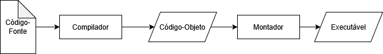
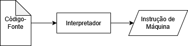
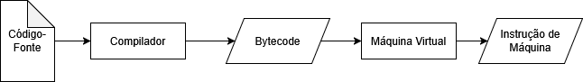

Para não ficarmos presos ao formato de exibição, podemos fazer com que uma função retorne um valor.
Funções com retorno são blocos de código que realizam uma tarefa e devolvem um resultado. Diferente de um procedimento (que só executa algo), a função sempre retorna um valor, como um número, um texto, um cálculo, etc.
Toda função com retorno deve declarar o tipo que ela devolve logo após a palavra funcao, como no exemplo abaixo, funcao inteiro:
programa {
funcao inicio() {
escreva(multi(10, 5)) // Invocando a função e exibindo o valor retornado com escreva
}
funcao inteiro multi(inteiro n1, inteiro n2) {
retorne n1 * n2
}
}
Como visto acima, a função só termina (e devolve um valor) quando encontra o comando retorne. O valor retornado deve ser do mesmo tipo declarado na função. Veja um exemplo com cadeia:
programa {
funcao inicio() {
inteiro num
cadeia ex
escreva("Digite um número de 0 a 9 para ver ele escrito por extenso: ")
leia(num)
ex = numeroPorExtenso(num) // Invocando função que retorna valor e guardando numa variável
escreva("Número ", num, " por extenso: ", ex, ".\n")
}
funcao cadeia numeroPorExtenso(inteiro numero) {
cadeia exten
escolha(numero) {
caso 0:
exten = "Zero"
pare
caso 1:
exten = "Um"
pare
caso 2:
exten = "Dois"
pare
caso 3:
exten = "Três"
pare
caso 4:
exten = "Quatro"
pare
caso 5:
exten = "Cinco"
pare
caso 6:
exten = "Seis"
pare
caso 7:
exten = "Sete"
pare
caso 8:
exten = "Oito"
pare
caso 9:
exten = "Nove"
pare
caso contrario:
exten = "Fora do intervalo"
pare
}
retorne exten
}
}
Note acima, que apesar da função receber um valor inteiro, ela retorna uma cadeia. Elas podem ter tipos de parâmetros diferentes do tipo de retorno.
Os parâmetros também podem ser de vários tipos diferentes, e uma função dessas também pode não ter parâmetros (mas não são tão usadas devido à pouca utilidade). Além disso, uma mesma função pode ter mais de uma instrução retorne (como, por exemplo, em condicionais se/senao), mas só um retorne será atingido, encerrará a função e devolverá o valor correspondente.
Note também que uma função que retorna um valor pode ser atribuída a uma variável, desde que sejam do mesmo tipo. Veja mais um exemplo simples:
programa {
funcao inicio() {
logico checa
inteiro alg
escreva("Digite um número qualquer: ")
leia(alg)
checa = ePar(alg)
se(checa) { // É o mesmo que checa == verdadeiro
escreva("É par!\n")
}
senao {
escreva("É ímpar!\n")
}
}
funcao logico ePar(inteiro num) {
retorne num % 2 == 0
}
}
É recomendado utilizar funções com retorno sempre que for necessário obter um valor que possa ser reutilizado em diferentes contextos do programa. Dessa forma, a lógica de cálculo ou processamento fica desacoplada da forma de exibição, permitindo que o valor retornado seja tratado ou apresentado da maneira mais adequada no programa principal, seja no console, em uma interface gráfica ou em outro meio.
PS: Um procedimento vazio também pode ter a instrução retorne sem nada. Nesse caso, ele só termina a execução do procedimento naquele ponto que a instrução é encontrada. Veja um exemplo simples:
programa {
funcao inicio() {
inteiro alg
escreva("Digite um número de 1 a 9: ")
leia(alg)
mostraNum(alg)
}
funcao mostraNum(inteiro num) { // Procedimento vazio
se(num < 1 ou num > 9) {
escreva("ERRO: ", num, " está fora do intervalo!\n")
retorne // Encerra o procedimento nesse ponto.
}
escreva("O número ", num, " está dentro do intervalo especificado!\n")
}
}
O escopo de uma variável determina onde ela pode ser usada dentro do programa. Existem dois tipos principais: Variáveis globais e variáveis locais.
São variáveis criadas fora de qualquer função ou procedimento, diretamente dentro da estrutura programa. Isso significa que elas podem ser acessadas por qualquer função ou procedimento do programa. Por exemplo:
programa {
inteiro contGlobal = 0 // Variável global
funcao inicio() {
contGlobal += 1 // Variável global sendo incrementada
escreva("Contador no inicio: ", contGlobal, "\n") // Mostra 1
mostrarContador() // Ao ser invocada, incrementa a variável global e mostra 2
}
funcao mostrarContador() {
contGlobal += 1 // Variável global sendo incrementada
escreva("Contador no procedimento: ", contGlobal, "\n")
}
}
Ou seja, a variável contGlobal pode ser usada tanto na função principal inicio quanto no procedimento mostrarContador, além de qualquer outra que poderia ser criada dentro desse mesmo programa.
São variáveis criados dentro de uma função ou procedimento. Só podem ser usadas dentro dessa rotina e não existem fora dela. Por exemplo:
programa {
funcao inicio() {
inteiro numero = 10 // Variável local de inicio
escreva("Número dentro do inicio: ", numero, "\n") // Exibe a variável local com 10
mostrarNumero() // Invocando a função exemplo, que tem outra variável de mesmo nome e mostra o 50 que está nela
}
funcao mostrarNumero() {
inteiro numero = 50 // Variável local de mostrarNumero, não é a mesma de inicio
escreva("Número dentro de mostrarNumero: ", numero, "\n")
}
}
A variável numero criada dentro de inicio só existe ali. O numero dentro de exemplo é uma variável diferente, mesmo tendo o mesmo nome. Uma rotina não consegue acessar a variável local da outra.
Recursividade é quando uma função chama ela mesma para resolver um problema. É como pedir ajuda para si mesmo, repetindo a tarefa, mas com um problema menor a cada vez, até chegar a um ponto em que não precisa mais chamar. Pense assim: Faça isso. Se ainda não terminar, faça de novo, mas com uma parte menor do problema
.
Para a recursividade funcionar bem, sempre precisamos de duas coisas:
Veja esse exemplo de uso, pra calcular o fatorial de um número:
programa {
funcao inicio() {
inteiro num, fat
escreva("Digite um número maior que 1 para ver seu fatorial: ")
leia(num)
fat = fatorial(num) // Invocando a função
escreva("Fatorial de ", num, " é: ", fat, ".\n")
}
funcao inteiro fatorial(inteiro n) {
se(n <= 1) { // Quando n for 1 ou menor, ele apenas retorna 1 e para de executar o código
retorne 1
}
// Chamado recursivo: A função chama ela mesma
retorne n * fatorial(n - 1)
}
}
PS: O fatorial de um número é o resultado da multiplicação dele pelos números menores que ele, descendo até o 1, (como 5 × 4 × 3 × 2 × 1 = 120
).
No caso acima, ao invés de usarmos laços de repetição, usamos a função recursiva para calcular o fatorial. No entanto, isso não significa que um substitui o outro.
As dicas daqui, são basicamente para linguagens imperativas, e podem ser adaptadas para qualquer linguagem que sigam e suportem esses paradigmas, como por exemplo:
Essas linguagens dizem ao computador como fazer algo, passo a passo, como executar comandos em ordem, usar variáveis, condições, laços, funções, etc., da seguinte forma:
As linguagens imperativas se dividem em duas: Linguagens estruturadas e linguagens orientadas a objetos.
As linguagens estruturadas são as que usam estruturas de controles claras, como estruturas condicionais (se e senao, escolha), de repetição (enquanto, para), além de funções e procedimentos. Basicamente o que vimos aqui foram os fundamentos da programação estruturada, que veio basicamente da programação procedural.
As linguagens orientadas a objetos seguem um estilo de programação que organiza o código de forma a torná-lo mais fácil de entender e de manter, usando classes com atributos e métodos pra manipular objetos. Muitos iniciantes se confundem achando que orientação a objetos tem a ver com criar interfaces gráficas ou arranjar componentes na tela, mas não tem nada a ver uma coisa com a outra.
Veja alguns exemplos de exercícios que podemos fazer com esses algoritmos:
257 -> 2 + 5 + 7 = 14).
enquanto ou para.sair.
Podemos também criar funcionalidades para coisas comuns nas linguagens de programação que não existem em Portugol, como por exemplo:
Basicamente, podemos ter dois tipos de tipagem de dados em linguagens de programação: A estática e a dinâmica. Veja as diferenças abaixo:
É quando você precisa declarar o tipo da variável antes de usar, e esse tipo não muda durante o programa.
Exemplo de código simples em C:
char nome[] = "Fulano";
int idade = 25;
printf("Nome: %s.\n", nome);
printf("Idade: %d.\n", idade);
O Portugol mesmo segue essa sintaxe:
cadeia nome = "Fulano"
inteiro idade = 25
escreva("Nome: ", nome, ".\n")
escreva("Idade: ", idade, ".\n")
É quando o tipo da variável é definido automaticamente pelo valor atribuído, sem declarar o tipo antes.
Veja um exemplo em Python:
nome = "Fulano"
idade = 25
print("Nome: {}.".format(nome))
print("Idade: {}.".format(idade))
No caso acima, as variáveis nome e idade poderiam ter atribuídos a elas um dado de outro tipo sem grandes problemas.
PS: Não confunda tipagem estática e dinâmica com tipagem forte e fraca, são conceitos diferentes. Geralmente as linguagens tipadas estaticamente são fortes, mas nem toda linguagem tipada dinamicamente é fraca (Python e Ruby, por exemplo, são dinâmicas e fortes).
Basicamente, existem três tipos de linguagens: Compiladas, interpretadas e virtualizadas. Vejam as diferenças abaixo:
O código é traduzido inteiro de uma vez para código de máquina antes de rodar. Esse processo é feito por um compilador.
Alguns exemplos de linguagens são C, C++, Pascal, Fortran.
O processo é esse:
PS: Não confunda código-objeto com o paradigma orientado a objetos. O código-objeto é um tipo de código gerado durante o processo de compilação. Ele é um formato intermediário que o compilador cria e que será convertido em um programa executável pelo montador (no caso do Windows, convertido pra .exe
).
O código é lido e executado linha por linha, enquanto o programa está rodando. Quem faz isso é um interpretador.
Alguns exemplos de linguagens são Python, Ruby, PHP, Javascript, R.
O processo é esse:
O código é compilado, mas não para o código da máquina real. Ele vira um código intermediário (bytecode). Esse bytecode roda dentro de uma máquina virtual (tipo um emulador
). Pode se dizer que ele é um meio-termo entre as compiladas e as interpretadas.
Alguns exemplos de linguagens são Java, C#, Visual Basic, Lua, Kotlin.
O processo é esse:
Como citado, no curso de algoritmos nós vimos a programação básica, que foca nos paradigmas imperativo e estruturado. No entanto, existem outros paradigmas que podemos encontrar nas linguagens de programação, veja abaixo os principais:
Organiza o programa em blocos lógicos usando sequência, decisão e repetição. Foca em passo a passo, parecido com algoritmos. Pode também ter módulos e bibliotecas, o que já partiria pra programação modular.
Código baseado em objetos, que representam coisas do mundo real. Cada objeto tem atributos (dados) e métodos (funções). Ajuda a organizar projetos grandes através de classes, herança e outros conceitos.
Foca em funções puras, sem alterar variáveis fora delas. Evita estado
e usa recursão ao invés de laços. Costuma gerar código mais previsível.
Foram as primeiras linguagens ditas de alto nível a serem criadas. Seguem comandos lidos de cima pra baixo, de esquerda pra direita, de forma semelhante a uma lista, podendo ter alguns poucos desvios. Não é classificada como um paradigma oficial
.
Linguagens mais próximas do hardware, que permitem controle direto da memória e do processador. Muito rápido, mas mais difícil de usar e menos abstrato. Foi a primeira linguagem propriamente dita, antes disso só existiam instruções diretas às máquinas.
PS: Algumas linguagens de nível mais alto, como o C, C++ e Pascal, permitem algumas coisas mais próximas do hardware, mas não são classificadas como baixo nível. No geral, apenas Assembly é classificada mesmo como tal, já que outras já estão indo pra código de máquina literal baseados em binários (os famosos 0 e 1 da computação)
Essas foram as primeiras linguagens, com seus respectivos anos de criação:
PS: O Plankalkül foi criado em 1945, antes mesmo do Assembly, no entanto, Plankalkül só foi implementada décadas mais tarde, em 1975.
Já as principais nem sempre seguem as regras acima: